阻尼 Holt · 半衰期 365 天
条件情景：趋势半衰期人为固定为 365 天，不代表历史已识别该参数
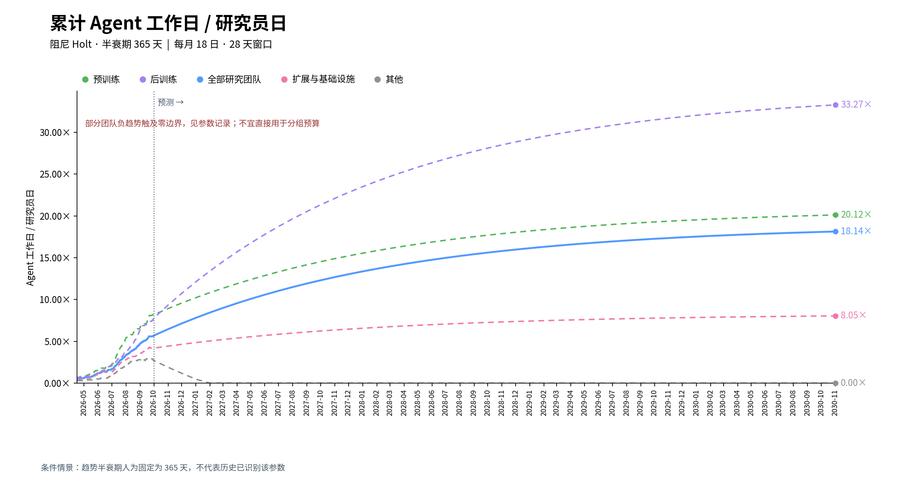

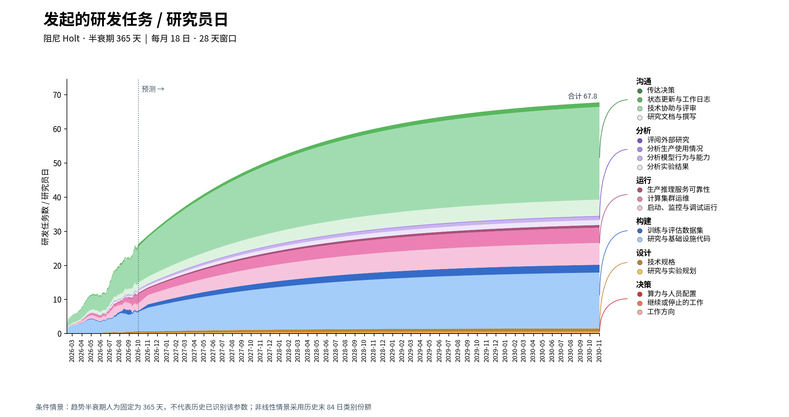
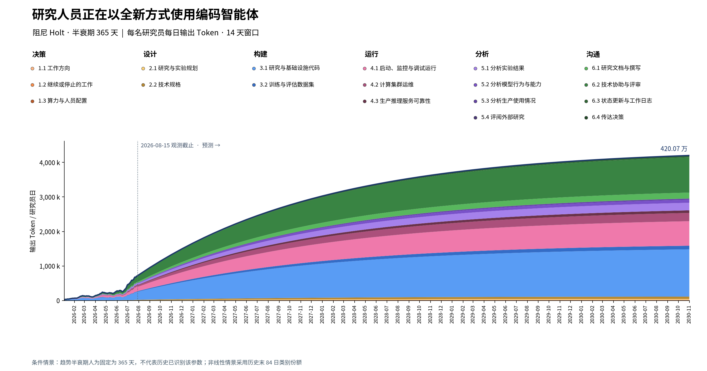
原图值不变；每套图仅使用一个总量增长模型。并发采用独立模型。所有曲线延伸至 2030-11-18；非线性不等于更准确。
条件情景：趋势半衰期人为固定为 365 天，不代表历史已识别该参数



阻尼由历史拟合；任务与输出触及 14 天下界，长期可能很快趋平
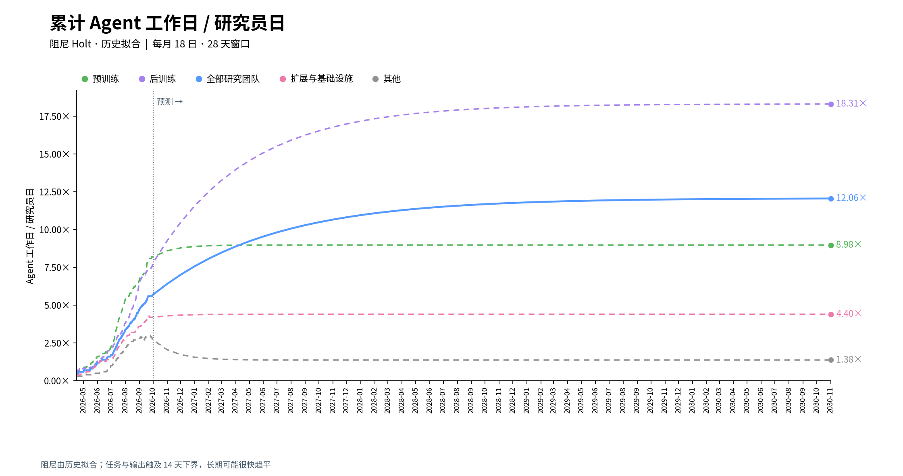

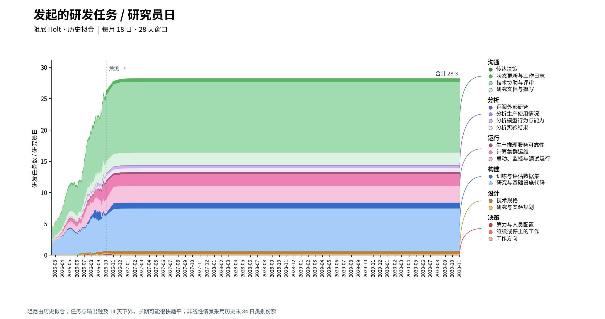
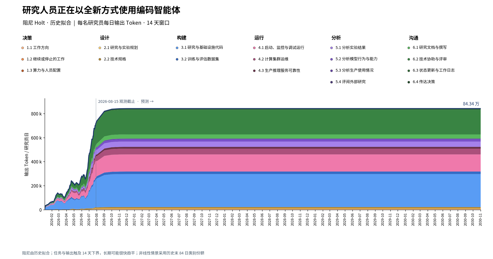
条件情景：上限设为各序列历史最大值的 4 倍，尚无外部容量证据
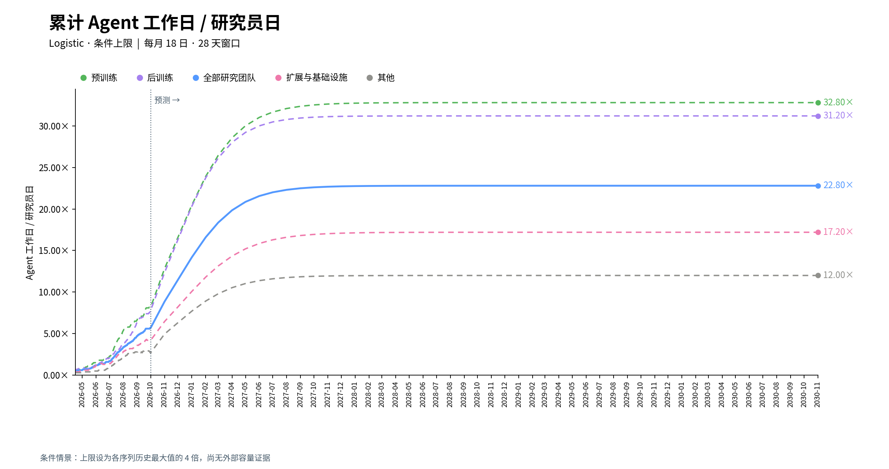

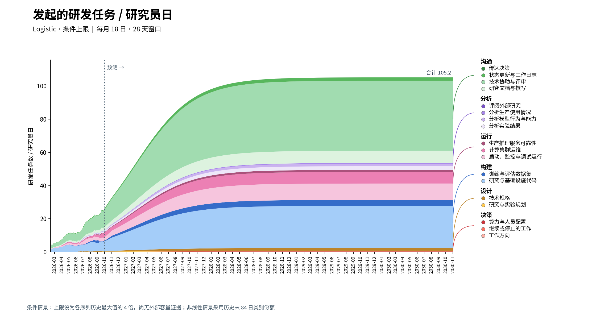
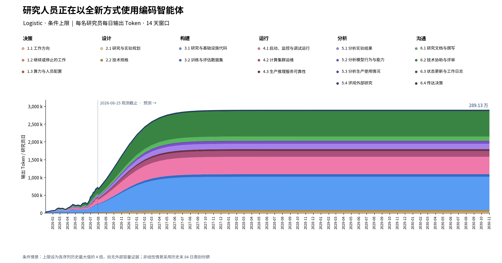
条件情景：上限设为各序列历史最大值的 4 倍，尚无外部容量证据
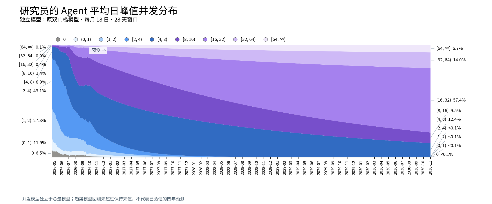
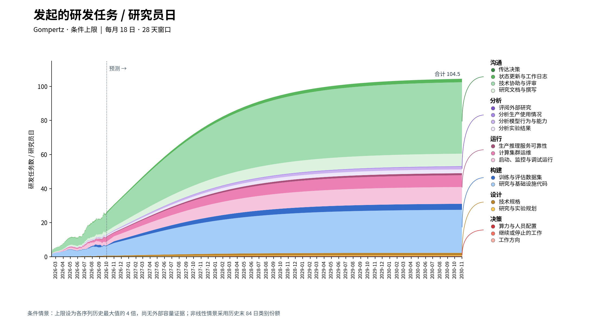
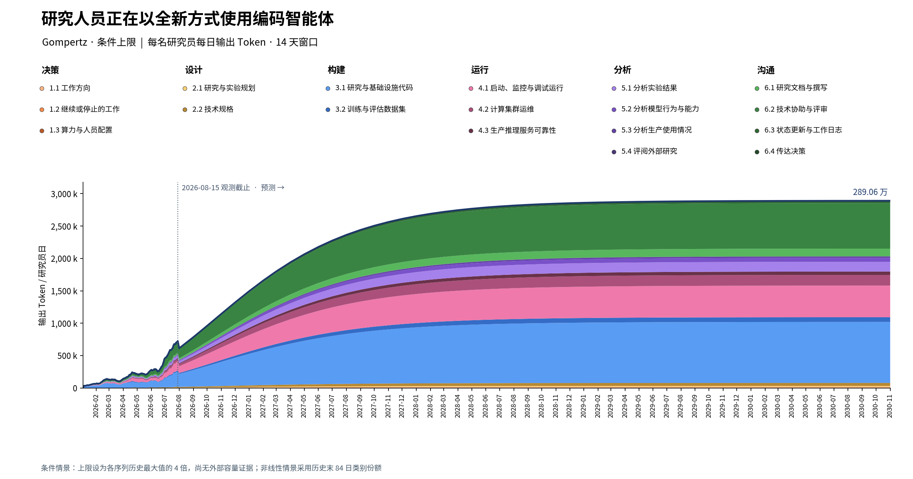
保持原 OLS 斜率与锚点规则，作为持续绝对增量的参照
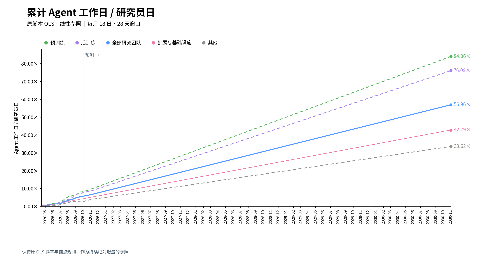

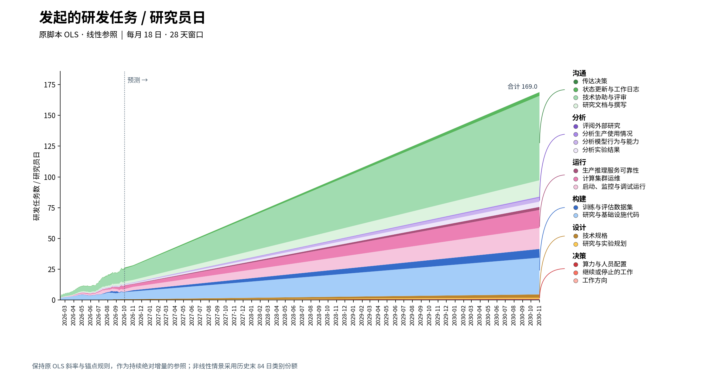
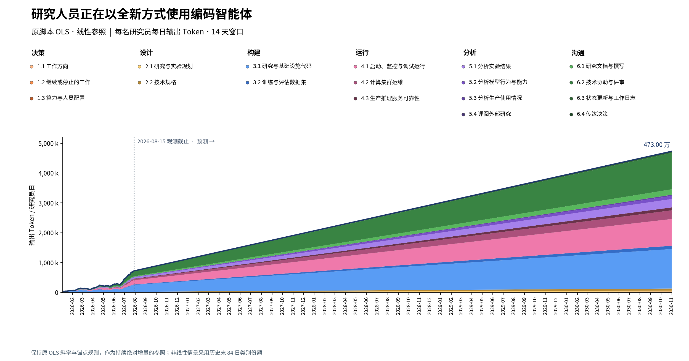